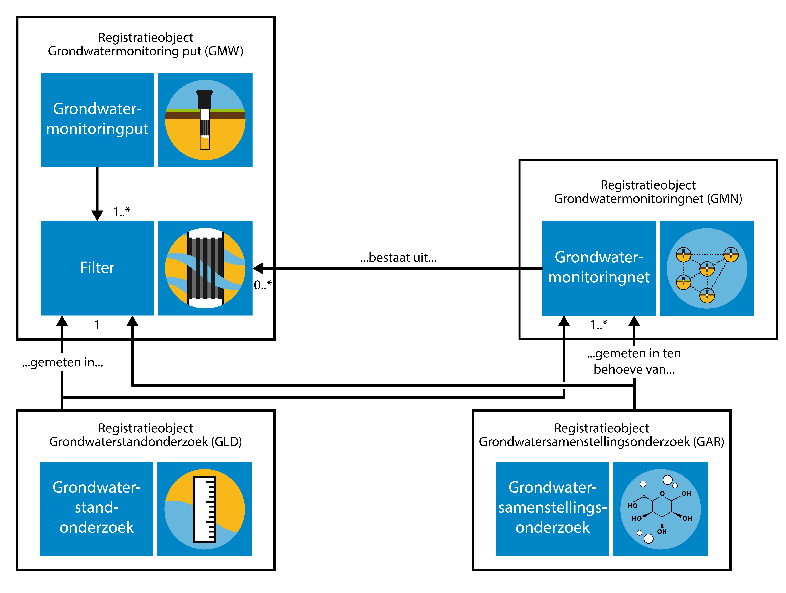

Dit is een werkversie van een standaard in ontwikkeling waarvan de inhoud onvolledig is, incorrect kan zijn en op elk moment kan wijzigen. Hoofdstuk vijf is automatisch gegenereerd uit een UML model dat nog in ontwikkeling is.
Inleiding
Deze documenten hangen samen zoals hieronder afgebeeld.
TODO afbeelding opnemen
Samenhang tussen documentatie
Naast deze documenten is er een document dat het systeem van de BRO als geheel beschrijft met als titel BRO-architectuur. In dat document wordt het ontwerp en de algemene werking van de BRO beschreven. Het document BRO-architectuur is alleen nog in een eerste en prille versie beschikbaar.
Leeswijzer
De volgende hoofdstukken van dit document geven respectievelijk een algemene inleiding in kenmerken en begrippen uit de basisregistratie ondergrond, een inleiding in het begrip grondwater, een uitleg over de catalogus en tenslotte de catalogus zelf.
In de tekst zijn termen cursief weergegeven als het termen zijn die in hoofdstuk , de gegevensdefinitie, zijn gedefinieerd.
Grondwaterstandonderzoek
Grondwatermonitoring
Grondwater is een belangrijke bestaansbron. Door het verzamelen van meetgegevens over ons grondwatersysteem kunnen trends worden gesignaleerd en kan getoetst worden aan normen en streefbeelden. Deze informatie is belangrijk voor grondwaterbeheerders en beleidsmakers voor het formuleren en evalueren van het grondwaterbeleid. Meetgegevens worden ook gebruikt voor het maken van rapportages zodat getoetst kan worden of we (inter)nationale afspraken naleven.
Het grondwater wordt daarom in Nederland in de gaten gehouden en beheerd. Het beheer van het grondwater richt zich op de hoeveelheid bruikbaar grondwater en de kwaliteit ervan. Om dit beheer goed te kunnen uitvoeren, wordt in Nederland de toestand van het grondwater over langere tijd gevolgd. Dat heet grondwatermonitoring. Er wordt daarbij gekeken naar de grondwaterstand (kwantiteit), en naar de samenstelling van het grondwater (kwaliteit). Hiervoor worden periodiek grondwaterstandonderzoeken en grondwatersamenstellingsonderzoeken uitgevoerd.
In het domein grondwatermonitoring staan de grondwatermonitoringnetten centraal die zijn ingesteld om het grondwater in Nederland te kunnen beheren. Het doel waarvoor een monitoringnet is ingesteld, het monitoringdoel, beperkt zich in veel gevallen tot kwantiteit of kwaliteit, maar het komt ook voor dat onderzoek aan zowel de kwantiteit als de kwaliteit wordt gedaan binnen hetzelfde grondwatermonitoringnet.
Grondwatermonitoring houdt in dat de toestand van het grondwater in een bepaald gebied, of eigenlijk in een bepaald deel van de ondergrond, over langere tijd gevolgd wordt. Tijdelijke bewakingsmeetnetten rond bijvoorbeeld saneringslocaties of stortplaatsen vallen buiten het BRO-domein. De uitgestrektheid van het gebied en de diepte van monitoring verschillen per grondwatermonitoringnet. Ook de duur van monitoring wisselt sterk.
In het Besluit basisregistratie ondergrond is omschreven welke vormen van monitoring onder deze basisregistratie vallen. Het belangrijkste criterium is het type organisatie dat verantwoordelijk is voor het beheer van het grondwater: de grondwatermonitoring moet door of in opdracht van een bestuursorgaan, de bronhouder, worden uitgevoerd. Verder is er een beperking aan de tijdschaal gesteld. Wanneer een monitoringnet is ingesteld om de toestand van het grondwater over een periode van ten minste één jaar te volgen, dan valt het altijd onder de basisregistratie ondergrond. Voor monitoringnetten met een kortere duur maakt het bestuursorgaan zelf de afweging of de gegevens in de basisregistratie moeten worden opgenomen. De periode van een jaar is lang genoeg voor het uitfilteren van de effecten van kleinschalige en kortdurende invloeden, zodat de informatie die in de basisregistratie wordt vastgelegd blijvende gebruikswaarde heeft. Aan de ruimtelijke schaal van monitoring zijn voor de basisregistratie ondergrond geen grenzen gesteld.
In de Regels omtrent de basisregistratie ondergrond en het Besluit basisregistratie ondergrond staat dat de BRO “voorlopig” respectievelijk “vooralsnog” geen milieukwaliteit informatie bevat. Voor het grondwatermonitoringdomein zijn Grondwatersamenstellingsonderzoeksgegevens uit monitoringsnetten rondom milieu-hygiënische projecten, waarin het met name gaat om het monitoren van de verontreiniging van de bodem en het grondwater, daarmee voorlopig buiten scope geplaatst. Op 18 december 2018 is in de Tweede kamer een motie aangenomen waarin de regering wordt verzocht ‘om informatie over bodemverontreiniging in de basisregistratie ondergrond op te nemen’ (Kamerstuk Motie 34864-19). Momenteel is nog niet bekend wat de gevolgen van deze motie zullen zijn voor de scope van Grondwaterwatersamenstellingsonderzoek.
De monitoring van de kwaliteit van de ondiepe bodem met het daarin aanwezige grondwater zoals dat gedaan wordt om de gevolgen van met name landbouwactiviteiten te kunnen volgen, valt binnen de scope van de BRO, maar buiten de scope van het registratieobject grondwatersamenstellingsonderzoek. Die vorm van monitoring valt binnen het BRO domein bodemkwaliteit (in landelijk gebied).
Daarnaast wordt de afbakening van grondwatersamenstellingsonderzoeken bepaald door het doel van het grondwatermonitoringnet waarbinnen de onderzoeken ontstaan. Deze is te relateren aan het wettelijk kader en daarmee samenhangende beleidsdoelen.
Ieder grondwatermonitoringnet omvat een aantal meetpunten. Deze meetpunten zijn gekoppeld aan (filters in) putten, de grondwatermonitoringputten. Wat er in de punten gemeten wordt, hangt af van het monitoringdoel. Wanneer het om kwantiteit gaat, worden grondwaterstanden gemeten, bij kwaliteit gaat het om de samenstelling van het grondwater.
De bestuursorganen die langdurig het grondwater (laten) monitoren op grondwaterkwaliteit, omdat zij daarin een wettelijke taak hebben zijn RIVM, Rijkswaterstaat, Provincies, Waterschappen, Gemeentes en bestuurlijke samenwerkingsverbanden. Daarnaast zijn er private organisaties die vanuit vergunningsplicht het grondwater langdurig monitoren op grondwaterkwaliteit, in opdracht van bevoegd gezag en/of voor eigen doelen. Dit zijn drinkwaterbedrijven, grondwater-onttrekkende industrie, (ondiepe) bodemenergie exploitanten (bedrijven, ziekenhuizen, overige instellingen) en natuurterreinbeheerorganisaties. Deze organisaties doen periodiek grondwatersamenstellingsonderzoek en hebben daarvoor grondwatermonitoringnetten en meetplannen.
Domein grondwatermonitoring in de BRO
Het domein grondwatermonitoring in de basisregistratie ondergrond (BRO) omvat de volgende vier registratieobjecten:
Grondwatermonitoringnet, dit wordt afgekort tot GMN (Groundwater Monitoring Network);
Grondwatermonitoringput, dit wordt afgekort tot GMW (Groundwater Monitoring Well);
Grondwatersamenstellingsonderzoek, dit wordt afgekort tot GAR (Groundwater Analysis Report), (grondwaterkwaliteit);
Grondwaterstandonderzoek, dit wordt afgekort tot GLD (Groundwater Level Dossier), (grondwaterkwantiteit).
Binnen de basisregistratie ondergrond worden in het conceptuele model en de catalogus de Nederlandse termen gebruikt. De technische Landelijke Voorziening van de basisregistratie ondergrond hanteert een Engelstalige benaming. Alle registratieobjecten hebben dus ook een Engelstalige benaming waarop de afkorting van het registratieobject is gebaseerd. Voor de basisregistratie ondergrond geldt dat het conceptuele model Nederlandstalige benaming hanteert, vanaf het logische model is alles Engelstalig.

De samenhang tussen de vier registratieobjecten binnen het grondwatermonitoring domein.
Een grondwatermonitoringput betreft de putconstructie die gebruikt wordt om grondwaterstanden (kwantiteit) en/of de samenstelling (kwaliteit) van het grondwater te meten. Gewoonlijk bestaat een put uit een samenstel van buizen dat aan het oppervlak wordt beschermd tegen invloeden van buitenaf. Via de buizen wordt het grondwater dat zich op een bepaalde diepte bevindt ontsloten. Het deel van de buis waardoor het grondwater binnen kan komen is het filter. Elke buis heeft één filter. Een filter fungeert als meetpunt in de basisregistratie ondergrond.
Informatie over grondwatermonitoringput is beschreven in de Catalogus Grondwatermonitoringput. Naast putten kunnen ook bronnen gebruikt worden in grondwaterkwaliteitsmonitoring. Een bron is een locatie waar het grondwater spontaan uittreedt aan het maaiveld. In de huidige, reeds vastgestelde standaard van het registratieobject grondwatermonitoringput zijn de bronnen niet opgenomen. Voorzien is om dit registratieobject aan te passen, zodat ook bronnen hierbinnen geregistreerd kunnen worden.
Alleen de grondwatermonitoringput heeft een fysieke locatie. De drie andere registratieobjecten zijn aan het registratieobject grondwatermonitoringsput gekoppeld en hebben daarmee indirect een locatie. Bij een grondwaterstandonderzoek en een grondwatersamenstellingsonderzoek ligt de verwijzing vast naar het filter in de grondwatermonitoringput waarin het onderzoek is uitgevoerd.
Bij een grondwatermonitoringsonderzoek (grondwatersamenstellingsonderzoek en grondwaterstandonderzoek) ligt daarnaast de verwijzing vast naar één of meerdere grondwatermonitoringnetten ten behoeve waarvan het onderzoek is uitgevoerd.
Een grondwatermonitoringnet is een verzameling locaties waar periodiek onderzoek aan het grondwater op een bepaalde diepte wordt gedaan om de toestand van het grondwater vanuit een perspectief te kunnen bepalen en de eventuele veranderingen erin te kunnen volgen. Het grondwatermonitoringnet faciliteert daardoor de groepering van onderzoeksgegevens door bronhouder op basis van het doel van monitoring. Het vergroot de hergebruikwaarde voor afnemers van de Landelijke Voorziening basisregistratie ondergrond.
Bij een grondwatermonitoringnet wordt een lijst met punten geregistreerd waarin gemeten wordt. Deze lijst bevat verwijzingen naar filters in grondwatermonitoringputten. Een grondwatermonitoringnet valt onder de verantwoordelijkheid van één bronhouder, heeft een vastgesteld monitoringsdoel en kent een bepaald programma.
In de praktijk komt het voor dat een grondwatersamenstellingsonderzoek ten behoeve meer dan één doel wordt uitgevoerd. Een bronhouder kan bijvoorbeeld omwille van de efficientie besluiten om één grondwatersamenstellingsonderzoek te laten doen, en de resultaten ervan zowel voor de Kaderrichtlijn Waterverplichtingen als voor aanvullende provinciale monitoringsdoelen te gebruiken. Omdat één grondwatermonitoringnet maar één doel kan hebben, betekent dit voor de basisregistratie ondergrond dat één grondwatersamenstellingsonderzoek kan ‘toebehoren’ aan één of meerdere grondwatermonitoringnetten.
Hierbij ontstaat ook de mogelijkheid dat de resultaten van een grondwatersamenstellingsonderzoek van bronhouder X ook wordt gebruikt door bronhouder Y voor de eigen monitoringdoelen. In dat geval wordt het onderzoek (ook) gekoppeld aan een grondwatermonitoringnet van bronhouder Y. Deze relatie moet tijdens de registratie van ieder grondwatersamenstellingsonderzoek worden vastgelegd in de basisregistratie ondergrond door de bronhouder (X) van het betreffende onderzoek. Bronhouder X wordt daarmee verantwoordelijk voor informatie die van bronhouder Y is (namelijk de koppeling van zijn onderzoek aan een grondwatermonitoringnet van Y). De bronhouder van het grondwatermonitoringnet (Y) wordt niet verantwoordelijk voor het grondwatersamenstellingsonderzoek zelf, daarvoor blijft bronhouder X verantwoordelijk.
Het grondwaterstandonderzoek
TO DO
Introductie van de catalogus
Type domeinen
Een domein beschrijft welke waarden een attribuut mag hebben. Domeinen zijn van een bepaald type en de typen die in de registratie ondergrond worden gebruikt worden hieronder toegelicht.